O problema
O principal gargalo identificado é a ausência de um fluxo padronizado para a coleta de dados cadastrais dos servidores e a gestão das inscrições em cursos.
Atualmente, a divulgação das capacitações e a distribuição de vagas ocorrem diretamente às diretorias, que ficam responsáveis pela seleção dos servidores — definindo os candidatos para as vagas efetivas e para o cadastro de reserva
O impacto negativo central decorre da distribuição ineficiente das vagas e de falhas no processo de coleta de dados, causadas pela falta de retorno tempestivo dos servidores e pela ausência de um cadastro atualizado e padronizado."
AS-IS · o processo antes do MVP
O caminho real, com quem faz, o que entra, onde espera e o que é automatizável. Fonte: tabela AS-IS do projeto.

Fluxograma AS-IS · amarelo: etapa manual; tracejado: ponto de espera. Os números correspondem à tabela. Fonte Mermaid.
| Etapa | Quem faz | Entra | Ação | Sai | Sistema | Regra | Onde espera | Tempo | Automatizável |
|---|---|---|---|---|---|---|---|---|---|
| Divulgar o curso e as vagas | Gerente de Formação | Curso, vagas e pré-requisitos | Envia e-mail às diretorias com as vagas de cada uma | E-mail de divulgação | Vagas distribuídas por diretoria | Não identificado | 1 | Sim, com regra clara | |
| Indicar os servidores | Chefia da diretoria | E-mail de divulgação | Escolhe titulares e reserva e responde por e-mail | E-mail com as indicações | Não indicar mais servidores que vagas | Retorno das diretorias | 36 | Sim, com apoio humano | |
| Coletar os dados dos servidores | Gerente de Formação | Indicações | Pede e recebe nome, lotação, matrícula, e-mail e telefone | Dados dos indicados | Dados completos | Retorno dos servidores | A medir | Sim, com regra clara | |
| Montar a planilha | Gerente de Formação | Dados dos indicados | Digita os dados no Excel | Planilha de inscritos | Excel | Ordem de indicação | Não identificado | A medir | Sim, com regra clara |
| Enviar ao responsável pelo curso | Gerente de Formação | Planilha | Compartilha a planilha com o gestor do curso | Lista de inscritos | Efetivação pela ordem de indicação | Não identificado | A medir | Sim, com regra clara | |
| Tratar desistências | Gerente de Formação | Desistência do titular | Chama o próximo do cadastro de reserva | Reserva convocada | E-mail e telefone | Próximo da reserva da mesma diretoria | Resposta da reserva | A medir | Sim, com apoio humano |
TO-BE · o processo com o MVP
O que muda em cada etapa, quem passa a fazer e o ganho esperado. Fonte: tabela TO-BE do projeto.

Fluxograma TO-BE · verde: máquina (automação local); azul: pessoa (fé pública). Fonte Mermaid.
Transformar a gestão de capacitações em um processo totalmente fluido, onde a tecnologia automatiza a coleta de dados e a comunicação, permitindo que a liderança foque na decisão estratégica e no desenvolvimento continuo dos servidores.
- Criar e divulgar o curso
Link e QR Code de inscrição gerados pelo app
A pessoa assistida pela máquinaDivulgação padronizada - Inscrever-se
Formulário validado e comprovante na hora
A pessoa assistida pela máquinaDados completos na primeira vez - Importar as inscrições
A gerência cola os e-mails e o app lê os blocos
A máquina (automação)Fim da redigitação - Triagem pela diretoria
Arquivo com os inscritos da diretoria e limite de vagas
A pessoa assistida pela máquinaDecisão sem ambiguidade - Convocar e chamar a reserva
Mensagens geradas com o link do grupo oficial
A pessoa assistida pela máquinaConvocação no mesmo dia
| Etapa | O que muda | Quem faz | Benefício | Esforço |
|---|---|---|---|---|
| Criar e divulgar o curso | Link e QR Code de inscrição gerados pelo app | A pessoa assistida pela máquina | Divulgação padronizada | Baixo |
| Inscrever-se | Formulário validado e comprovante na hora | A pessoa assistida pela máquina | Dados completos na primeira vez | Médio |
| Importar as inscrições | A gerência cola os e-mails e o app lê os blocos | A máquina (automação) | Fim da redigitação | Médio |
| Triagem pela diretoria | Arquivo com os inscritos da diretoria e limite de vagas | A pessoa assistida pela máquina | Decisão sem ambiguidade | Médio |
| Convocar e chamar a reserva | Mensagens geradas com o link do grupo oficial | A pessoa assistida pela máquina | Convocação no mesmo dia | Baixo |
O que o MVP entrega
Tela-assinatura: Cartões de curso com a esteira Divulgar → Turma.
Menu do MVP: CursosImportar inscriçõesTriagemConfiguração
Regras de negócio
| ID | Regra | Quando | Tipo | Exceção |
|---|---|---|---|---|
RN01 | Matrícula, nome, lotação, diretoria e e-mail são obrigatórios | Na inscrição | Validação | Nenhuma |
RN02 | E-mail institucional (@politec.mt.gov.br) | Na inscrição | Validação | Servidor de outra força em curso integrado |
RN03 | Uma inscrição por matrícula e curso; o reenvio substitui a anterior | Na importação | Validação | Nenhuma |
RN04 | Matrícula ausente do SEAP gera alerta, sem recusar | Na conferência | Validação | Nenhuma |
RN05 | A diretoria não marca mais titulares que as vagas dela | Na triagem | Negócio | Nenhuma |
RN06 | A efetivação segue a ordem de indicação da diretoria | Na convocação | Negócio | Nenhuma |
RN07 | Desistência de titular chama o próximo da reserva da mesma diretoria | Após a convocação | Negócio | Reserva vazia: a vaga volta para a gerência |
RN08 | Dados dos inscritos apagados 30 dias após o fim do curso | Ao abrir o app | LGPD | Nenhuma |
Papéis
| Papel | Quem é | O que vê | O que faz | O que não faz | Registro |
|---|---|---|---|---|---|
| gerente | quem organiza os cursos e o numero de vagas | atender máximos de servidores e diferentes setores | planilha dos interessados e divulga os inscritos | mudar a ordem de indicação | servidores com inscrição efetivada |
| chefia | divulga as vagas aos servidores do setor | possibilidades e perfis para as vagas | respostas de indicação via email | mandar mais servidores do que vagas | e-mail com as indicações |
| Servidor (candidato) | Servidor da POLITEC interessado no curso | Dados do curso e o próprio comprovante | Inscreve-se e confirma presença | Ver outros inscritos | Inscrição com protocolo e data |
Métricas do piloto
Como testar
O MVP é um `index.html` offline, com dados fictícios. Abra index.html.
cd Apps/inscricoes-cursos python construir.py python testes/testar.py python testes/cenarios.py python testes/jornada.py # Lightpanda (via WSL, CDP em 9222 e HTTP em 8000) python testes/jornada.py --cdp http://127.0.0.1:9222 --base http://127.0.0.1:8000
Documentos: PROJETO.md · sprint.md · README.md